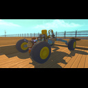

How to build a upside-down car
How can you not get nervous from your car flipping over and you had to fill up a place in your inventory with the lift? SAY NO MORE! This is the guide for you. Here you can learn how to build a simple car that, when it flips over, under the press of a button, you can ride it UPSIDE DOWN!